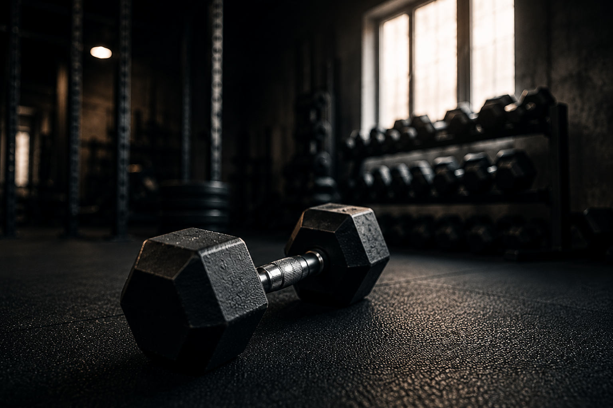
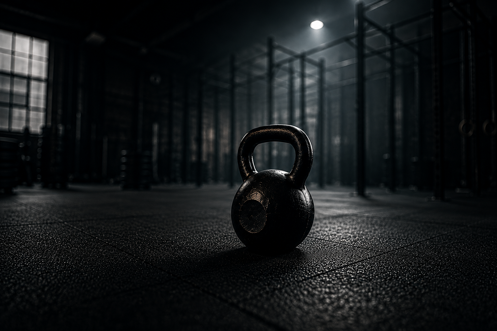

CLASE INDIVIDUAL
Entrenamiento 100% personalizado, enfocado en tu cuerpo, tu ritmo y tu bienestar.
Mi nombre es Ezequiel Caballero, tengo 33 años y soy Instructor Personal.
Me dedico al entrenamiento personalizado enfocado en VOS, no importa la edad que tengas.
Trabajo lo que es el cuidado del cuerpo y la adaptación de uno mismo.
Si estás acá es porque te interesa entrenar y que tengas un tiempo para usarlo al máximo.
Así que nada... ¡ARRANQUEMOS!


Entrenamiento 100% personalizado, enfocado en tu cuerpo, tu ritmo y tu bienestar.

Constancia que crea hábitos. Mejorás tu energía, empezás a ver cambios y sostenés el progreso en el tiempo.

Mayor frecuencia, mejores resultados. Desarrollás fuerza, resistencia y transformás tu cuerpo.
No. El entrenamiento se adapta a vos desde el primer día, sin importar tu nivel.
No hay problema. Justamente empezamos de forma progresiva para que tu cuerpo vuelva a activarse sin sobrecargas.
Son exigentes según tu nivel. La idea no es llevarte al límite, sino hacerte progresar de forma segura y sostenida.
Podés entrenar de forma individual o en pequeños grupos, siempre con seguimiento personalizado.
Trabajamos fuerza, movilidad, coordinación y resistencia, combinando distintos ejercicios según tus objetivos.
El enfoque principal es la salud. Los cambios físicos llegan como consecuencia de hacer las cosas bien.
Sí. La postura y la técnica son la base para entrenar mejor, evitar lesiones y obtener resultados reales.
Siempre. Cada entrenamiento se adapta a tu cuerpo y a tus necesidades.
Sí, pero de forma adaptada. El objetivo es mejorar esas molestias, no empeorarlas.
Depende de tu constancia. Con continuidad, los cambios empiezan a notarse en pocas semanas.
Más fuerza, mejor postura, más energía y cambios físicos progresivos.
El objetivo es mejorar tus hábitos. El cuerpo cambia cuando sostenés un proceso en el tiempo.
Se recomienda entre 2 y 3 veces por semana para lograr resultado
Cada clase dura aproximadamente 60 minutos.
Los entrenamientos se realizan en un espacio preparado para trabajar de forma cómoda y segura.